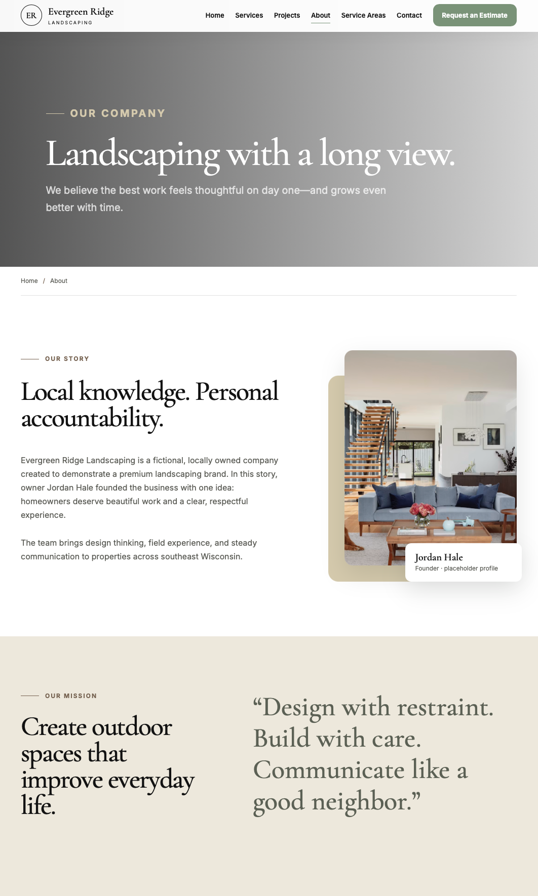
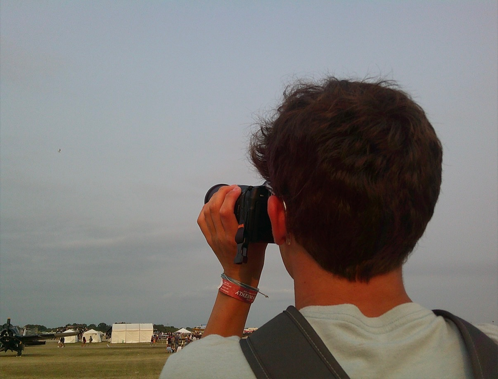

Aviation
Aircraft, airshows, movement, and atmosphere captured in flight.
View collectionIndependent photographer · Wisconsin
A considered study of place, motion, and the people who move through both.
View selected workWisconsin, United States · 2026
Selected portfolio
01/05
Aircraft, airshows, movement, and atmosphere captured in flight.
View collectionAutomotive details, reflections, motion, and machines with character.
View collectionNatural light, honest expression, and clean editorial portraiture.
View collectionMovement, pressure, competition, and the energy surrounding every play.
View collectionPatient observations of movement, stillness, and the natural world.
View collectionBeyond Photography
The same attention to composition, detail, and atmosphere that shapes my photography carries into the websites I build. Clear, modern, and designed to help businesses turn attention into action.
Explore Web Designisaacmotlvisuals.com / web-design


About / Wisconsin
I’m Isaac Motl, a photographer and web designer based in Wisconsin. Photography taught me to notice the small details that shape how something feels. I carry that same attention into every website I design — creating work that is clear, intentional, and personal.
More about Isaac